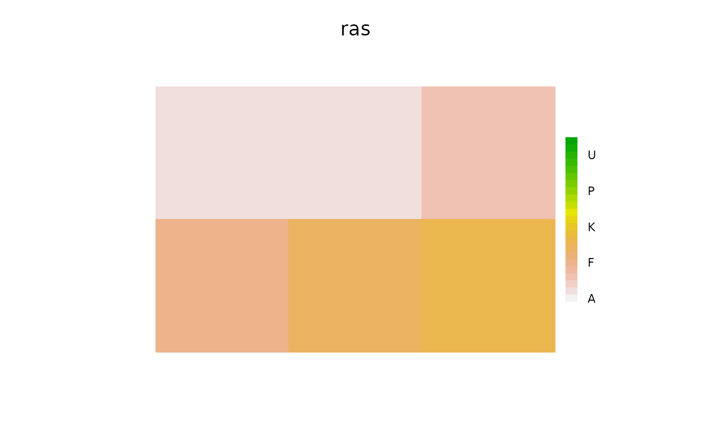
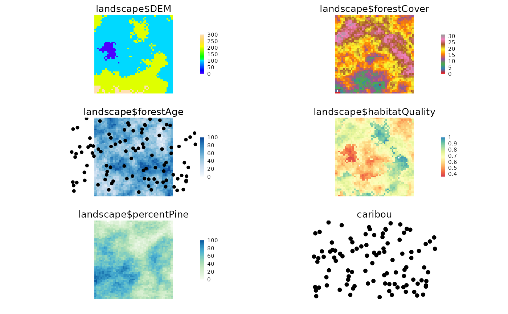
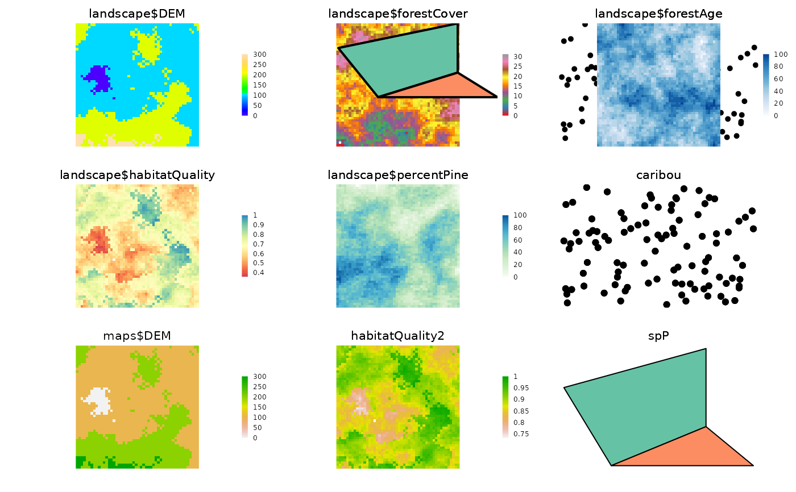

Under some conditions, a device and its metadata need to be cleared manually.
This can be done with either the new = TRUE argument within the call to Plot.
Sometimes, the metadata of a previous plot will prevent correct plotting of
a new Plot call.
Use clearPlot to clear the device and all the associated metadata manually.
clearPlot(dev = dev.cur(), removeData = TRUE, force = FALSE)
# S4 method for numeric,logical
clearPlot(dev = dev.cur(), removeData = TRUE, force = FALSE)
# S4 method for numeric,missing
clearPlot(dev, force)
# S4 method for missing,logical
clearPlot(removeData, force)
# S4 method for missing,missing
clearPlot(dev = dev.cur(), removeData = TRUE, force = FALSE)Arguments
- dev
Numeric. Device number to clear.
- removeData
Logical indicating whether any data that was stored in the
.quickPlotEnvshould also be removed; i.e., not just the plot window wiped.- force
Logical or "all". Sometimes the graphics state cannot be fixed by a simple
clearPlot(). If TRUE, this will close the device and reopen the same device number. If "all", then allquickPlotrelated data from all devices will be cleared, in addition to device closing and reopening.
Examples
library(sp)
library(raster)
requireNamespace("rgdal") # required for raster loading
library(RColorBrewer)
files <- dir(system.file("maps", package = "quickPlot"), full.names = TRUE, pattern = "tif")
maps <- lapply(files, raster)
names(maps) <- lapply(maps, names)
# put layers into a single stack for convenience
landscape <- stack(maps$DEM, maps$forestCover, maps$forestAge,
maps$habitatQuality, maps$percentPine)
# can change color palette
setColors(landscape, n = 50) <- list(DEM = topo.colors(50),
forestCover = brewer.pal(9, "Set1"),
forestAge = brewer.pal("Blues", n = 8),
habitatQuality = brewer.pal(9, "Spectral"),
percentPine = brewer.pal("GnBu", n = 8))
# Make a new raster derived from a previous one; must give it a unique name
habitatQuality2 <- landscape$habitatQuality ^ 0.3
names(habitatQuality2) <- "habitatQuality2"
# make a SpatialPoints object
caribou <- sp::SpatialPoints(coords = cbind(x = stats::runif(1e2, -50, 50),
y = stats::runif(1e2, -50, 50)))
# use factor raster to give legends as character strings
ras <- raster(extent(0, 3, 0, 4), vals = sample(1:4, size = 12, replace = TRUE), res = 1)
# needs to have a data.frame with ID as first column - see ?raster::ratify
levels(ras) <- data.frame(ID = 1:4, Name = paste0("Level", 1:4))
Plot(ras, new = TRUE)
# Arbitrary values for factors, including zero and not all levels represented in raster
levs <- c(0:5, 7:12)
ras <- raster(extent(0, 3, 0, 2), vals = c(1, 1, 3, 5, 8, 9), res = 1)
levels(ras) <- data.frame(ID = levs, Name = LETTERS[c(1:3, 8:16)])
Plot(ras, new = TRUE)
# Arbitrary values for factors, including zero and not all levels represented in raster
levs <- c(0:5, 7:23)
ras <- raster(extent(0, 3, 0, 2), vals = c(1, 1, 3, 5, 8, 9), res = 1)
levels(ras) <- data.frame(ID = levs, Name = LETTERS[1:23])
Plot(ras, new = TRUE)

# SpatialPolygons
sr1 <- sp::Polygon(cbind(c(2, 4, 4, 1, 2), c(2, 3, 5, 4, 2)) * 20 - 50)
sr2 <- sp::Polygon(cbind(c(5, 4, 2, 5), c(2, 3, 2, 2)) * 20 - 50)
srs1 <- sp::Polygons(list(sr1), "s1")
srs2 <- sp::Polygons(list(sr2), "s2")
spP <- sp::SpatialPolygons(list(srs1, srs2), 1:2)
clearPlot()
Plot(ras)
clearPlot()
Plot(landscape)
# Can overplot, using addTo
Plot(caribou, addTo = "landscape$forestAge", size = 4, axes = FALSE)
# can add a plot to the plotting window
Plot(caribou, new = FALSE)

# Can add two maps with same name, if one is in a stack; they are given
# unique names based on object name
Plot(landscape, caribou, maps$DEM)
# can mix stacks, rasters, SpatialPoint*
Plot(landscape, habitatQuality2, caribou)
# can mix stacks, rasters, SpatialPoint*, and SpatialPolygons*
Plot(landscape, caribou)
Plot(habitatQuality2, new = FALSE)
Plot(spP)
Plot(spP, addTo = "landscape$forestCover", gp = gpar(lwd = 2))
# provide arrangement, NumRow, NumCol
Plot(spP, arr = c(1, 4), new = TRUE)

# example base plot
clearPlot()
Plot(1:10, 1:10, addTo = "test", new = TRUE) # if there is no "test" then it will make it
Plot(4, 5, pch = 22, col = "blue", addTo = "test")
obj1 <- rnorm(1e2)
Plot(obj1, axes = "L")
 # Can plot named lists of objects (but not base objects yet)
ras1 <- ras2 <- ras
a <- list()
for (i in 1:2) {
a[[paste0("ras", i)]] <- get(paste0("ras", i))
}
a$spP <- spP
clearPlot()
Plot(a)
# clean up
clearPlot()
# Can plot named lists of objects (but not base objects yet)
ras1 <- ras2 <- ras
a <- list()
for (i in 1:2) {
a[[paste0("ras", i)]] <- get(paste0("ras", i))
}
a$spP <- spP
clearPlot()
Plot(a)
# clean up
clearPlot()